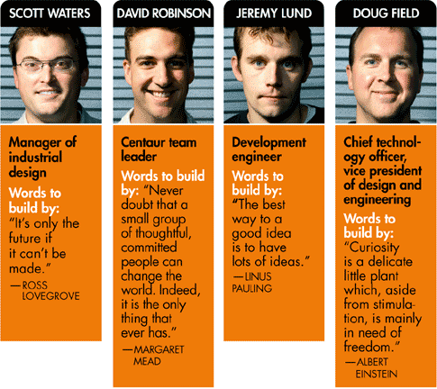

Meet the Team
Segway is passionately devoted to moving you- easily, efficiently, intelligently simple. The company's first product, the Segway® Personal Transporter (PT), was the first two-wheeled, self-balancing, electric transportation device to use our patented dynamic stabilization technology.
Today, Segway is focused on serving our customers by developing safe, unique products that are redefining personal transportation for consumers and businesses. Segway works with commercial and municipal organizations to realize the benefits of zero-emission personal transportation that increase productivity and utilize existing infrastructure.
Together with our customers, we help government leaders create the framework to adopt these new technologies and safely and wisely integrate them into society. For our investors and dealers, we create successful new business opportunities with an exciting roadmap to the future.
We continue to focus our research and development efforts on creating versatile, agile, short-range devices that utilize the patented dynamic stabilization technology and advanced alternative-power systems. We strive to make every product we build as exhilarating as our flagship product, the Segway PT, in order to excite and keep people on the move.